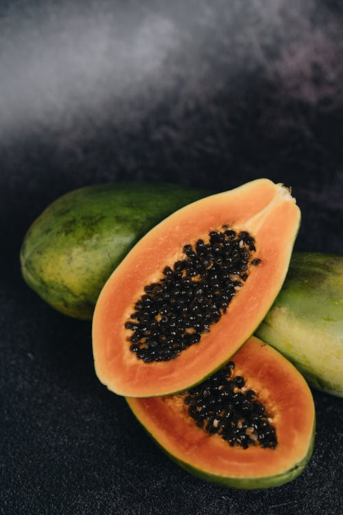
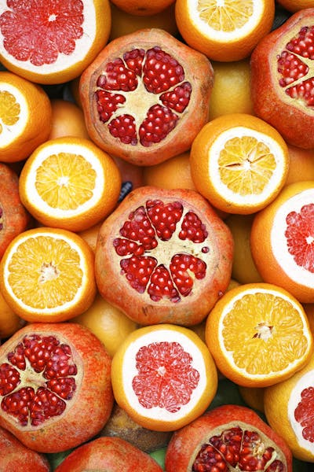

Disclosure
Some links in this article are Amazon affiliate links. If you purchase through them, we may earn a small commission at no extra cost to you. See our full disclaimer.

Quick Facts
Buy on Amazon:
Check Price on Amazon →Affiliate link — we may earn a commission. See our disclaimer.
Overview
The Excalibur 3926TB is not a subtle product. It is a large, black, square appliance that takes up significant counter or shelf space, runs at a steady hum for hours on end, and costs considerably more than the vertical-stack dehydrators that dominate the entry-level market. What it offers in exchange is a level of consistency and capacity that entry-level units cannot match.
We have been using this unit for eight months, working through multiple batches of vegetables, fruits, and beef jerky. The testing conditions are as close to real off-grid food preservation as a workshop setting allows: full tray loads, varied produce types, temperature settings from 105°F to 165°F, and both short sessions (four hours for kale chips) and extended overnight runs (fourteen-plus hours for tomatoes).
The bottom line before we get into specifics: the 3926TB delivers what it promises. Temperature control is accurate, airflow is genuinely even across all nine trays without tray rotation, and the finished product — properly dried vegetables, fruit leathers, jerky — is consistently good. The weaknesses are the price, the footprint, and the noise, all of which are known quantities that buyers in this price range should factor in.
Build Quality and Design
The casing is food-grade BPA-free polycarbonate plastic — it is not stainless steel, and it does not pretend to be. At 22 lbs, the unit feels substantial but is not unusually heavy for a nine-tray appliance. The front-loading design means you pull trays forward like a drawer rather than stacking them on top of each other. This is a significant practical advantage: you can check any tray without disturbing the others or losing heat.
The door seals with a magnetic closure that creates a consistent seal without clips or latches. After eight months of use, the door alignment and seal quality remain unchanged. The thermostat dial is analog, not digital, which we appreciate for its simplicity — there are no circuit boards to fail, no display to fog up, no firmware to consider. You set the temperature, set the timer, and walk away.
Trays are 15 inches by 15 inches, made of the same BPA-free polycarbonate as the housing. They flex slightly under a heavy load but do not crack or warp. Mesh inserts (sold separately for smaller items like herbs and kale) sit in the tray frame securely. The heating element and fan assembly are rear-mounted, meaning nothing projects into the drying chamber from the sides or top.
Performance Testing
We ran the 3926TB through a structured test sequence covering five vegetable types and two fruit types across five separate full-load sessions.
Carrots (125°F, 10 hours, 6 lbs raw): Sliced at 3mm on a mandoline. The finished product was uniformly firm and snap-dry — no soft spots on any tray, including trays 1 and 9 (the extremes). Weight reduction: approximately 85%. No tray rotation needed.
Zucchini (125°F, 8 hours, 5 lbs raw): Sliced at 4mm. Zucchini has a high water content and the 3926TB handled it without extending the run time significantly. Output was crisp and slightly translucent — correct for a fully dehydrated result. Tray 5 (center) and tray 2 (near the fan) had identical texture.
Tomatoes (135°F, 12 hours, 8 lbs raw): Halved Roma tomatoes, cut-side up. This was the most demanding test — tomatoes at full load generate significant moisture in the first three hours, and inadequate airflow causes condensation on upper trays. The 3926TB handled this without moisture pooling. The top trays dried marginally faster than the bottom by roughly 30 minutes, which we attribute to natural heat stratification rather than any airflow failure.
Apples (135°F, 8 hours, 6 lbs raw): Sliced at 5mm, treated with lemon water to prevent browning. Color retention was excellent across all trays. Texture ranged from slightly chewy (ideal for snacking) to crisp depending on slice thickness consistency.
Bananas (135°F, 10 hours, 4 lbs raw): Sliced at 6mm. Bananas are unforgiving — they go from underdone to over-caramelized in a relatively short window at higher temperatures. At 135°F the results were consistent and within the expected texture range. We would not go above 140°F for bananas in this unit.
Beef jerky (165°F, 6 hours, 3 lbs raw): Marinated flank steak, sliced at 4mm. The 165°F maximum is the USDA-recommended temperature for meat safety. Output was evenly dried with no chewy soft centers on any piece across the full nine-tray load — which is the real test of airflow consistency for jerky.
Temperature Control
We verified the internal temperature using a calibrated digital probe thermometer placed on trays 1, 5, and 9 simultaneously at three set points: 115°F, 135°F, and 155°F.
At 115°F, measured readings were 113°F (tray 9, nearest fan), 116°F (tray 5, center), and 114°F (tray 1, furthest from fan). The maximum variance was 3°F across the full tray stack — acceptable for live-culture dehydration like yogurt or raw food processing where temperature ceiling matters.
At 135°F, readings were 133°F, 136°F, and 134°F. At 155°F, readings were 152°F, 156°F, and 153°F. The analog thermostat is clearly calibrated well at the factory — it does not run hot or cold in a way that would meaningfully affect results. The slight front-to-back gradient (fan side warmer by 1–3°F) is consistent with horizontal airflow design and matches what other reviewers report.
The Hyperwave technology Excalibur markets — where the heating element cycles to prevent the food surface from reaching the internal air temperature — is not something we can directly measure, but the practical effect is visible: food dried at 135°F does not show the surface hardening ("case hardening") that seals moisture inside, which is a common failure mode on cheaper units running at fixed heat output.
Noise Level
The 3926TB runs continuously once switched on. We measured the noise output using a decibel meter at a distance of one meter from the front face: approximately 54–56 dB at all temperature settings. That is comparable to a quiet conversation or an older refrigerator compressor. It is not loud enough to make a room uncomfortable, but it is present. In an open-plan kitchen or living space, you will hear it. In a dedicated pantry or utility room, it is a non-issue.
The fan tone is constant — no cycling, no fluctuation — which some people find easier to tune out than intermittent sounds. There is no rattle or vibration at normal operating temperatures.
Cleaning and Maintenance
The trays are dishwasher safe (top rack) and easy to clean by hand. The interior chamber wipes down cleanly with a damp cloth. The rear element and fan assembly are not accessible for cleaning and do not need to be under normal use — food does not reach that area during operation.
The mesh inserts for small items require more attention: fine particles (herb dust, fruit sugar) accumulate in the mesh and are difficult to fully remove without soaking. A ten-minute soak in warm soapy water resolves it but it is a minor inconvenience compared to vertical-stack units where food residue drips down through all lower trays.
After eight months of heavy use, there is no discoloration on the interior or tray surfaces beyond normal staining from tomato and beet sessions.
Value for Money
The 3926TB is not cheap. It sits at the upper end of the home dehydrator market, competing with other large-capacity units from Cosori and Nesco. What justifies the price is the combination of the warranty (10 years on the motor and fan, which are the components that fail on cheaper units), the genuine tray capacity (15 sq ft is substantially more than most competing units at this price), and the manufacturing history — Excalibur has been producing dehydrators since 1973.
For someone dehydrating occasionally — a few sessions per year — the price premium is hard to justify. An entry-level 5-tray circular unit at a fraction of the cost does the job adequately for light use. For someone who dehydrates regularly as part of off-grid food storage, homesteading, or serious food prep, the 3926TB pays back in durability and consistency over a multi-year period.
Pros
- 15 sq ft of drying space — handles full-season harvest batches
- Temperature consistent within 3°F across all 9 trays — no tray rotation needed
- 26-hour timer with auto shut-off — run overnight without monitoring
- Front-loading design lets you check individual trays without heat loss
- 10-year warranty on motor and fan — longest in the category
- Precise thermostat from 105°F enables live-culture and raw food use
- Quiet enough at 55 dB for kitchen or pantry placement
Cons
- High purchase price — significant upfront cost relative to entry-level units
- Large footprint — requires dedicated shelf or counter space
- Plastic construction — not stainless steel
- Mesh inserts for small items require soaking to clean
- Top trays dry marginally faster than bottom — minor variance in long runs
- No digital display or programmable settings — analog thermostat only

Verdict
Our Verdict: 8 / 10 — Recommended
The Excalibur 3926TB does what a dehydrator at this price and specification level should do: it dries food evenly, accurately, and reliably across a full nine-tray load without tray rotation. Temperature variance of 3°F across the stack is genuine engineering, not marketing. The 26-hour timer and auto shut-off make overnight and unattended runs practical. The 10-year warranty is meaningful for a machine you might use weekly for years.
We dock two points for the price (which limits accessibility), the plastic construction (which is functional but not premium), and the minor tray-position gradient on very long high-moisture runs.
For regular dehydrators — anyone doing seasonal vegetable preservation, making jerky consistently, or building long-term food storage — this is the machine we would buy again. For occasional use, look at the 5-tray version or a lower-cost alternative.
Buy on Amazon:
Check Price on Amazon →Affiliate link — we may earn a commission. See our disclaimer.
Related Reviews and Guides
- How to Dehydrate Vegetables and Store Them in Glass Jars
- Bluetti AC200P Power Station Review
- Jackery Explorer 1000 Pro Review
If you have used the 3926TB or a comparable unit — particularly for large-batch vegetable preservation — we would like to hear your drying times and temperature settings. Leave a comment with the specifics.